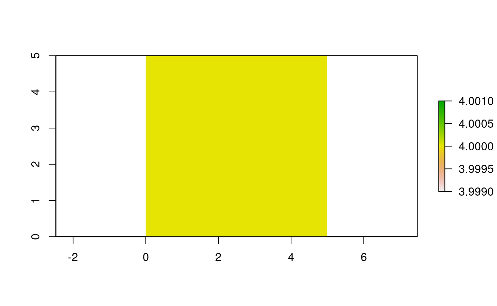

vignettes/Intro-to-Cache.Rmd
Intro-to-Cache.RmdAs part of a reproducible workflow, caching of function calls, code chunks, and other elements of a project is a critical component. The objective of a reproducible workflow is is likely that an entire work flow from raw data to publication, decision support, report writing, presentation building etc., could be built and be reproducible anywhere, on any computer, operating system, with any starting conditions, on demand. The reproducible::Cache function is built to work with any R function.
Cache uses 2 key the archivist functions saveToLocalRepo and loadFromLocalRepo, but does not use archivist::cache. Similar to archivist::cache, there is some reliance on digest::digest to determine whether the arguments are identical in subsequent iterations; however, it also uses fastdigest::fastdigest to make it substantially faster in many cases. It also but does many things that make standard caching with digest::digest don’t work reliably between systems. For these, the function .robustDigest is introduced to make caching transferable between systems. This is relevant for file paths, environments, parallel clusters, functions (which are contained within an environment), and many others (e.g., see ?.robustDigest for methods). Cache also adds important elements like automated tagging and the option to retrieve disk-cached values via stashed objects in memory using memoise::memoise. This means that running Cache 1, 2, and 3 times on the same function will get progressively faster. This can be extremely useful for web apps built with, say shiny.
Any function can be cached using: Cache(FUN = functionName, ...).
This will be a slight change to a function call, such as: projectRaster(raster, crs = crs(newRaster)) to Cache(projectRaster, raster, crs = crs(newRaster)).
This is particularly useful for expensive operations.
library(raster)## Loading required package: splibrary(reproducible)
tmpDir <- file.path(tempdir(), "reproducible_examples", "Cache")
checkPath(tmpDir, create = TRUE)## [1] "C:/Temp/Rtmp6LffnP/reproducible_examples/Cache"ras <- raster(extent(0,1000,0,1000), vals = 1:1e6, res = 1)
crs(ras) <- "+proj=lcc +lat_1=48 +lat_2=33 +lon_0=-100 +ellps=WGS84"
newCRS <- "+init=epsg:4326 +proj=longlat +datum=WGS84 +no_defs +ellps=WGS84 +towgs84=0,0,0"
# No Cache
system.time(map1 <- projectRaster(ras, crs = newCRS))## user system elapsed
## 2.3 0.4 2.7# With Cache -- a little slower the first time because saving to disk
system.time(map1 <- Cache(projectRaster, ras, crs = newCRS, cacheRepo = tmpDir,
notOlderThan = Sys.time()))## user system elapsed
## 2.94 0.51 3.54# vastly faster the second time
system.time(map2 <- Cache(projectRaster, ras, crs = newCRS, cacheRepo = tmpDir))## loading cached result from previous projectRaster call, adding to memoised copy## user system elapsed
## 0.07 0.05 0.16# even faster the third time
system.time(map3 <- Cache(projectRaster, ras, crs = newCRS, cacheRepo = tmpDir))## loading memoised result from previous projectRaster call.## user system elapsed
## 0.03 0.03 0.08all.equal(map1, map2) # TRUE## [1] TRUEall.equal(map1, map3) # TRUE## [1] TRUElibrary(raster)
# magrittr, if loaded, gives an error below
try(detach("package:magrittr", unload = TRUE), silent = TRUE)
try(clearCache(tmpDir), silent = TRUE) # just to make sure it is clear
ranNumsA <- Cache(rnorm, 10, 16, cacheRepo = tmpDir)
# All same
ranNumsB <- Cache(rnorm, 10, 16, cacheRepo = tmpDir) # recovers cached copy## loading cached result from previous rnorm call, adding to memoised copyranNumsC <- rnorm(10, 16) %>% Cache(cacheRepo = tmpDir) # recovers cached copy## loading memoised result from previous 'rnorm' pipe sequence call.ranNumsD <- Cache(quote(rnorm(n = 10, 16)), cacheRepo = tmpDir) # recovers cached copy## loading memoised result from previous rnorm call.# Any minor change makes it different
ranNumsE <- rnorm(10, 6) %>% Cache(cacheRepo = tmpDir) # differentranNumsA <- Cache(rnorm, 4, cacheRepo = tmpDir, userTags = "objectName:a")
ranNumsB <- Cache(runif, 4, cacheRepo = tmpDir, userTags = "objectName:b")
# access it again, from Cache
ranNumsA <- Cache(rnorm, 4, cacheRepo = tmpDir, userTags = "objectName:a")## loading cached result from previous rnorm call, adding to memoised copywholeCache <- showCache(tmpDir)## Cache size:## Total (including Rasters): 512 bytes## Selected objects (not including Rasters): 512 bytes# keep only items accessed "recently" (i.e., only objectName:a)
onlyRecentlyAccessed <- showCache(tmpDir, userTags = max(wholeCache[tagKey == "accessed"]$tagValue))## Cache size:## Total (including Rasters): 512 bytes## Selected objects (not including Rasters): 256 bytes# inverse join with 2 data.tables ... using: a[!b]
# i.e., return all of wholeCache that was not recently accessed
toRemove <- unique(wholeCache[!onlyRecentlyAccessed], by = "artifact")$artifact
clearCache(tmpDir, toRemove) # remove ones not recently accessed## Cache size:## Total (including Rasters): 512 bytes## Selected objects (not including Rasters): 256 bytesshowCache(tmpDir) # still has more recently accessed## Cache size:## Total (including Rasters): 256 bytes## Selected objects (not including Rasters): 256 bytes## artifact tagKey
## 1: 49133386e963f9e889675fb0322e39f9 format
## 2: 49133386e963f9e889675fb0322e39f9 name
## 3: 49133386e963f9e889675fb0322e39f9 class
## 4: 49133386e963f9e889675fb0322e39f9 date
## 5: 49133386e963f9e889675fb0322e39f9 cacheId
## 6: 49133386e963f9e889675fb0322e39f9 objectName
## 7: 49133386e963f9e889675fb0322e39f9 function
## 8: 49133386e963f9e889675fb0322e39f9 object.size
## 9: 49133386e963f9e889675fb0322e39f9 accessed
## 10: 49133386e963f9e889675fb0322e39f9 otherFunctions
## 11: 49133386e963f9e889675fb0322e39f9 otherFunctions
## 12: 49133386e963f9e889675fb0322e39f9 otherFunctions
## 13: 49133386e963f9e889675fb0322e39f9 otherFunctions
## 14: 49133386e963f9e889675fb0322e39f9 otherFunctions
## 15: 49133386e963f9e889675fb0322e39f9 otherFunctions
## 16: 49133386e963f9e889675fb0322e39f9 otherFunctions
## 17: 49133386e963f9e889675fb0322e39f9 otherFunctions
## 18: 49133386e963f9e889675fb0322e39f9 otherFunctions
## 19: 49133386e963f9e889675fb0322e39f9 otherFunctions
## 20: 49133386e963f9e889675fb0322e39f9 otherFunctions
## 21: 49133386e963f9e889675fb0322e39f9 otherFunctions
## 22: 49133386e963f9e889675fb0322e39f9 preDigest
## 23: 49133386e963f9e889675fb0322e39f9 preDigest
## 24: 49133386e963f9e889675fb0322e39f9 accessed
## artifact tagKey
## tagValue createdDate
## 1: rda 2018-09-11 15:35:41
## 2: 49133386e963f9e889675fb0322e39f9 2018-09-11 15:35:41
## 3: numeric 2018-09-11 15:35:41
## 4: 2018-09-11 15:35:41 2018-09-11 15:35:41
## 5: f55d44974d91fbf61b6cb524983b1ebc 2018-09-11 15:35:41
## 6: a 2018-09-11 15:35:41
## 7: rnorm 2018-09-11 15:35:41
## 8: 1024 2018-09-11 15:35:41
## 9: 2018-09-11 15:35:41 2018-09-11 15:35:41
## 10: withCallingHandlers 2018-09-11 15:35:41
## 11: saveRDS 2018-09-11 15:35:41
## 12: do.call 2018-09-11 15:35:41
## 13: process_file 2018-09-11 15:35:41
## 14: process_group 2018-09-11 15:35:41
## 15: process_group.block 2018-09-11 15:35:41
## 16: call_block 2018-09-11 15:35:41
## 17: block_exec 2018-09-11 15:35:41
## 18: in_dir 2018-09-11 15:35:41
## 19: timing_fn 2018-09-11 15:35:41
## 20: handle 2018-09-11 15:35:41
## 21: withVisible 2018-09-11 15:35:41
## 22: n:c1de94a5a8d2a5813e07152fb7ea2038 2018-09-11 15:35:41
## 23: .FUN:a979d0700a6ef8c7c18736096ff1d522 2018-09-11 15:35:41
## 24: 2018-09-11 15:35:42 2018-09-11 15:35:42
## tagValue createdDateclearCache(tmpDir)ranNumsA <- Cache(rnorm, 4, cacheRepo = tmpDir, userTags = "objectName:a")
ranNumsB <- Cache(runif, 4, cacheRepo = tmpDir, userTags = "objectName:b")
# keep only those cached items from the last 24 hours
oneDay <- 60 * 60 * 24
keepCache(tmpDir, after = Sys.time() - oneDay)## Cache size:## Total (including Rasters): 512 bytes## Selected objects (not including Rasters): 512 bytes## artifact tagKey
## 1: 53db2903c43e5424b164a2f0a14bc3d2 format
## 2: 53db2903c43e5424b164a2f0a14bc3d2 name
## 3: 53db2903c43e5424b164a2f0a14bc3d2 class
## 4: 53db2903c43e5424b164a2f0a14bc3d2 date
## 5: 53db2903c43e5424b164a2f0a14bc3d2 cacheId
## 6: 53db2903c43e5424b164a2f0a14bc3d2 objectName
## 7: 53db2903c43e5424b164a2f0a14bc3d2 function
## 8: 53db2903c43e5424b164a2f0a14bc3d2 object.size
## 9: 53db2903c43e5424b164a2f0a14bc3d2 accessed
## 10: 53db2903c43e5424b164a2f0a14bc3d2 otherFunctions
## 11: 53db2903c43e5424b164a2f0a14bc3d2 otherFunctions
## 12: 53db2903c43e5424b164a2f0a14bc3d2 otherFunctions
## 13: 53db2903c43e5424b164a2f0a14bc3d2 otherFunctions
## 14: 53db2903c43e5424b164a2f0a14bc3d2 otherFunctions
## 15: 53db2903c43e5424b164a2f0a14bc3d2 otherFunctions
## 16: 53db2903c43e5424b164a2f0a14bc3d2 otherFunctions
## 17: 53db2903c43e5424b164a2f0a14bc3d2 otherFunctions
## 18: 53db2903c43e5424b164a2f0a14bc3d2 otherFunctions
## 19: 53db2903c43e5424b164a2f0a14bc3d2 otherFunctions
## 20: 53db2903c43e5424b164a2f0a14bc3d2 otherFunctions
## 21: 53db2903c43e5424b164a2f0a14bc3d2 otherFunctions
## 22: 53db2903c43e5424b164a2f0a14bc3d2 preDigest
## 23: 53db2903c43e5424b164a2f0a14bc3d2 preDigest
## 24: 8bb6b3490e9e33f9e86e2e8b083fe8a2 format
## 25: 8bb6b3490e9e33f9e86e2e8b083fe8a2 name
## 26: 8bb6b3490e9e33f9e86e2e8b083fe8a2 class
## 27: 8bb6b3490e9e33f9e86e2e8b083fe8a2 date
## 28: 8bb6b3490e9e33f9e86e2e8b083fe8a2 cacheId
## 29: 8bb6b3490e9e33f9e86e2e8b083fe8a2 objectName
## 30: 8bb6b3490e9e33f9e86e2e8b083fe8a2 function
## 31: 8bb6b3490e9e33f9e86e2e8b083fe8a2 object.size
## 32: 8bb6b3490e9e33f9e86e2e8b083fe8a2 accessed
## 33: 8bb6b3490e9e33f9e86e2e8b083fe8a2 otherFunctions
## 34: 8bb6b3490e9e33f9e86e2e8b083fe8a2 otherFunctions
## 35: 8bb6b3490e9e33f9e86e2e8b083fe8a2 otherFunctions
## 36: 8bb6b3490e9e33f9e86e2e8b083fe8a2 otherFunctions
## 37: 8bb6b3490e9e33f9e86e2e8b083fe8a2 otherFunctions
## 38: 8bb6b3490e9e33f9e86e2e8b083fe8a2 otherFunctions
## 39: 8bb6b3490e9e33f9e86e2e8b083fe8a2 otherFunctions
## 40: 8bb6b3490e9e33f9e86e2e8b083fe8a2 otherFunctions
## 41: 8bb6b3490e9e33f9e86e2e8b083fe8a2 otherFunctions
## 42: 8bb6b3490e9e33f9e86e2e8b083fe8a2 otherFunctions
## 43: 8bb6b3490e9e33f9e86e2e8b083fe8a2 otherFunctions
## 44: 8bb6b3490e9e33f9e86e2e8b083fe8a2 otherFunctions
## 45: 8bb6b3490e9e33f9e86e2e8b083fe8a2 preDigest
## 46: 8bb6b3490e9e33f9e86e2e8b083fe8a2 preDigest
## artifact tagKey
## tagValue createdDate
## 1: rda 2018-09-11 15:35:42
## 2: 53db2903c43e5424b164a2f0a14bc3d2 2018-09-11 15:35:42
## 3: numeric 2018-09-11 15:35:42
## 4: 2018-09-11 15:35:42 2018-09-11 15:35:42
## 5: f55d44974d91fbf61b6cb524983b1ebc 2018-09-11 15:35:42
## 6: a 2018-09-11 15:35:42
## 7: rnorm 2018-09-11 15:35:42
## 8: 1024 2018-09-11 15:35:42
## 9: 2018-09-11 15:35:42 2018-09-11 15:35:42
## 10: withCallingHandlers 2018-09-11 15:35:42
## 11: saveRDS 2018-09-11 15:35:42
## 12: do.call 2018-09-11 15:35:42
## 13: process_file 2018-09-11 15:35:42
## 14: process_group 2018-09-11 15:35:42
## 15: process_group.block 2018-09-11 15:35:42
## 16: call_block 2018-09-11 15:35:42
## 17: block_exec 2018-09-11 15:35:42
## 18: in_dir 2018-09-11 15:35:42
## 19: timing_fn 2018-09-11 15:35:42
## 20: handle 2018-09-11 15:35:42
## 21: withVisible 2018-09-11 15:35:42
## 22: n:c1de94a5a8d2a5813e07152fb7ea2038 2018-09-11 15:35:42
## 23: .FUN:a979d0700a6ef8c7c18736096ff1d522 2018-09-11 15:35:42
## 24: rda 2018-09-11 15:35:43
## 25: 8bb6b3490e9e33f9e86e2e8b083fe8a2 2018-09-11 15:35:43
## 26: numeric 2018-09-11 15:35:43
## 27: 2018-09-11 15:35:43 2018-09-11 15:35:43
## 28: 7cb09aa387ba235db013863648303b34 2018-09-11 15:35:43
## 29: b 2018-09-11 15:35:43
## 30: runif 2018-09-11 15:35:43
## 31: 1024 2018-09-11 15:35:43
## 32: 2018-09-11 15:35:42 2018-09-11 15:35:43
## 33: withCallingHandlers 2018-09-11 15:35:43
## 34: saveRDS 2018-09-11 15:35:43
## 35: do.call 2018-09-11 15:35:43
## 36: process_file 2018-09-11 15:35:43
## 37: process_group 2018-09-11 15:35:43
## 38: process_group.block 2018-09-11 15:35:43
## 39: call_block 2018-09-11 15:35:43
## 40: block_exec 2018-09-11 15:35:43
## 41: in_dir 2018-09-11 15:35:43
## 42: timing_fn 2018-09-11 15:35:43
## 43: handle 2018-09-11 15:35:43
## 44: withVisible 2018-09-11 15:35:43
## 45: n:c1de94a5a8d2a5813e07152fb7ea2038 2018-09-11 15:35:43
## 46: .FUN:179092fbad3ec261e58bc89bc8a703c3 2018-09-11 15:35:43
## tagValue createdDate# Keep all Cache items created with an rnorm() call
keepCache(tmpDir, userTags = "rnorm")## Cache size:## Total (including Rasters): 512 bytes## Selected objects (not including Rasters): 256 bytes## artifact tagKey
## 1: 53db2903c43e5424b164a2f0a14bc3d2 format
## 2: 53db2903c43e5424b164a2f0a14bc3d2 name
## 3: 53db2903c43e5424b164a2f0a14bc3d2 class
## 4: 53db2903c43e5424b164a2f0a14bc3d2 date
## 5: 53db2903c43e5424b164a2f0a14bc3d2 cacheId
## 6: 53db2903c43e5424b164a2f0a14bc3d2 objectName
## 7: 53db2903c43e5424b164a2f0a14bc3d2 function
## 8: 53db2903c43e5424b164a2f0a14bc3d2 object.size
## 9: 53db2903c43e5424b164a2f0a14bc3d2 accessed
## 10: 53db2903c43e5424b164a2f0a14bc3d2 otherFunctions
## 11: 53db2903c43e5424b164a2f0a14bc3d2 otherFunctions
## 12: 53db2903c43e5424b164a2f0a14bc3d2 otherFunctions
## 13: 53db2903c43e5424b164a2f0a14bc3d2 otherFunctions
## 14: 53db2903c43e5424b164a2f0a14bc3d2 otherFunctions
## 15: 53db2903c43e5424b164a2f0a14bc3d2 otherFunctions
## 16: 53db2903c43e5424b164a2f0a14bc3d2 otherFunctions
## 17: 53db2903c43e5424b164a2f0a14bc3d2 otherFunctions
## 18: 53db2903c43e5424b164a2f0a14bc3d2 otherFunctions
## 19: 53db2903c43e5424b164a2f0a14bc3d2 otherFunctions
## 20: 53db2903c43e5424b164a2f0a14bc3d2 otherFunctions
## 21: 53db2903c43e5424b164a2f0a14bc3d2 otherFunctions
## 22: 53db2903c43e5424b164a2f0a14bc3d2 preDigest
## 23: 53db2903c43e5424b164a2f0a14bc3d2 preDigest
## artifact tagKey
## tagValue createdDate
## 1: rda 2018-09-11 15:35:42
## 2: 53db2903c43e5424b164a2f0a14bc3d2 2018-09-11 15:35:42
## 3: numeric 2018-09-11 15:35:42
## 4: 2018-09-11 15:35:42 2018-09-11 15:35:42
## 5: f55d44974d91fbf61b6cb524983b1ebc 2018-09-11 15:35:42
## 6: a 2018-09-11 15:35:42
## 7: rnorm 2018-09-11 15:35:42
## 8: 1024 2018-09-11 15:35:42
## 9: 2018-09-11 15:35:42 2018-09-11 15:35:42
## 10: withCallingHandlers 2018-09-11 15:35:42
## 11: saveRDS 2018-09-11 15:35:42
## 12: do.call 2018-09-11 15:35:42
## 13: process_file 2018-09-11 15:35:42
## 14: process_group 2018-09-11 15:35:42
## 15: process_group.block 2018-09-11 15:35:42
## 16: call_block 2018-09-11 15:35:42
## 17: block_exec 2018-09-11 15:35:42
## 18: in_dir 2018-09-11 15:35:42
## 19: timing_fn 2018-09-11 15:35:42
## 20: handle 2018-09-11 15:35:42
## 21: withVisible 2018-09-11 15:35:42
## 22: n:c1de94a5a8d2a5813e07152fb7ea2038 2018-09-11 15:35:42
## 23: .FUN:a979d0700a6ef8c7c18736096ff1d522 2018-09-11 15:35:42
## tagValue createdDate# Remove all Cache items that happened within a rnorm() call
clearCache(tmpDir, userTags = "rnorm")## Cache size:## Total (including Rasters): 256 bytes## Selected objects (not including Rasters): 256 bytesshowCache(tmpDir) ## empty## Cache size:## Total (including Rasters): 0 bytes## Selected objects (not including Rasters): 0 bytes## Empty data.table (0 rows) of 3 cols: md5hash,name,createdDate# default userTags is "and" matching; for "or" matching use |
ranNumsA <- Cache(runif, 4, cacheRepo = tmpDir, userTags = "objectName:a")
ranNumsB <- Cache(rnorm, 4, cacheRepo = tmpDir, userTags = "objectName:b")
# show all objects (runif and rnorm in this case)
showCache(tmpDir)## Cache size:## Total (including Rasters): 512 bytes## Selected objects (not including Rasters): 512 bytes## artifact tagKey
## 1: 20a336bc4deb9fd5c50cef697be633b1 format
## 2: 20a336bc4deb9fd5c50cef697be633b1 name
## 3: 20a336bc4deb9fd5c50cef697be633b1 class
## 4: 20a336bc4deb9fd5c50cef697be633b1 date
## 5: 20a336bc4deb9fd5c50cef697be633b1 cacheId
## 6: 20a336bc4deb9fd5c50cef697be633b1 objectName
## 7: 20a336bc4deb9fd5c50cef697be633b1 function
## 8: 20a336bc4deb9fd5c50cef697be633b1 object.size
## 9: 20a336bc4deb9fd5c50cef697be633b1 accessed
## 10: 20a336bc4deb9fd5c50cef697be633b1 otherFunctions
## 11: 20a336bc4deb9fd5c50cef697be633b1 otherFunctions
## 12: 20a336bc4deb9fd5c50cef697be633b1 otherFunctions
## 13: 20a336bc4deb9fd5c50cef697be633b1 otherFunctions
## 14: 20a336bc4deb9fd5c50cef697be633b1 otherFunctions
## 15: 20a336bc4deb9fd5c50cef697be633b1 otherFunctions
## 16: 20a336bc4deb9fd5c50cef697be633b1 otherFunctions
## 17: 20a336bc4deb9fd5c50cef697be633b1 otherFunctions
## 18: 20a336bc4deb9fd5c50cef697be633b1 otherFunctions
## 19: 20a336bc4deb9fd5c50cef697be633b1 otherFunctions
## 20: 20a336bc4deb9fd5c50cef697be633b1 otherFunctions
## 21: 20a336bc4deb9fd5c50cef697be633b1 otherFunctions
## 22: 20a336bc4deb9fd5c50cef697be633b1 preDigest
## 23: 20a336bc4deb9fd5c50cef697be633b1 preDigest
## 24: a7e10d21dfabd4de86e152d1e3cdf664 format
## 25: a7e10d21dfabd4de86e152d1e3cdf664 name
## 26: a7e10d21dfabd4de86e152d1e3cdf664 class
## 27: a7e10d21dfabd4de86e152d1e3cdf664 date
## 28: a7e10d21dfabd4de86e152d1e3cdf664 cacheId
## 29: a7e10d21dfabd4de86e152d1e3cdf664 objectName
## 30: a7e10d21dfabd4de86e152d1e3cdf664 function
## 31: a7e10d21dfabd4de86e152d1e3cdf664 object.size
## 32: a7e10d21dfabd4de86e152d1e3cdf664 accessed
## 33: a7e10d21dfabd4de86e152d1e3cdf664 otherFunctions
## 34: a7e10d21dfabd4de86e152d1e3cdf664 otherFunctions
## 35: a7e10d21dfabd4de86e152d1e3cdf664 otherFunctions
## 36: a7e10d21dfabd4de86e152d1e3cdf664 otherFunctions
## 37: a7e10d21dfabd4de86e152d1e3cdf664 otherFunctions
## 38: a7e10d21dfabd4de86e152d1e3cdf664 otherFunctions
## 39: a7e10d21dfabd4de86e152d1e3cdf664 otherFunctions
## 40: a7e10d21dfabd4de86e152d1e3cdf664 otherFunctions
## 41: a7e10d21dfabd4de86e152d1e3cdf664 otherFunctions
## 42: a7e10d21dfabd4de86e152d1e3cdf664 otherFunctions
## 43: a7e10d21dfabd4de86e152d1e3cdf664 otherFunctions
## 44: a7e10d21dfabd4de86e152d1e3cdf664 otherFunctions
## 45: a7e10d21dfabd4de86e152d1e3cdf664 preDigest
## 46: a7e10d21dfabd4de86e152d1e3cdf664 preDigest
## artifact tagKey
## tagValue createdDate
## 1: rda 2018-09-11 15:35:43
## 2: 20a336bc4deb9fd5c50cef697be633b1 2018-09-11 15:35:43
## 3: numeric 2018-09-11 15:35:43
## 4: 2018-09-11 15:35:43 2018-09-11 15:35:43
## 5: 7cb09aa387ba235db013863648303b34 2018-09-11 15:35:43
## 6: a 2018-09-11 15:35:43
## 7: runif 2018-09-11 15:35:43
## 8: 1024 2018-09-11 15:35:43
## 9: 2018-09-11 15:35:43 2018-09-11 15:35:43
## 10: withCallingHandlers 2018-09-11 15:35:43
## 11: saveRDS 2018-09-11 15:35:43
## 12: do.call 2018-09-11 15:35:43
## 13: process_file 2018-09-11 15:35:43
## 14: process_group 2018-09-11 15:35:43
## 15: process_group.block 2018-09-11 15:35:43
## 16: call_block 2018-09-11 15:35:43
## 17: block_exec 2018-09-11 15:35:43
## 18: in_dir 2018-09-11 15:35:43
## 19: timing_fn 2018-09-11 15:35:43
## 20: handle 2018-09-11 15:35:43
## 21: withVisible 2018-09-11 15:35:43
## 22: n:c1de94a5a8d2a5813e07152fb7ea2038 2018-09-11 15:35:43
## 23: .FUN:179092fbad3ec261e58bc89bc8a703c3 2018-09-11 15:35:43
## 24: rda 2018-09-11 15:35:43
## 25: a7e10d21dfabd4de86e152d1e3cdf664 2018-09-11 15:35:44
## 26: numeric 2018-09-11 15:35:44
## 27: 2018-09-11 15:35:44 2018-09-11 15:35:44
## 28: f55d44974d91fbf61b6cb524983b1ebc 2018-09-11 15:35:44
## 29: b 2018-09-11 15:35:44
## 30: rnorm 2018-09-11 15:35:44
## 31: 1024 2018-09-11 15:35:44
## 32: 2018-09-11 15:35:43 2018-09-11 15:35:44
## 33: withCallingHandlers 2018-09-11 15:35:44
## 34: saveRDS 2018-09-11 15:35:44
## 35: do.call 2018-09-11 15:35:44
## 36: process_file 2018-09-11 15:35:44
## 37: process_group 2018-09-11 15:35:44
## 38: process_group.block 2018-09-11 15:35:44
## 39: call_block 2018-09-11 15:35:44
## 40: block_exec 2018-09-11 15:35:44
## 41: in_dir 2018-09-11 15:35:44
## 42: timing_fn 2018-09-11 15:35:44
## 43: handle 2018-09-11 15:35:44
## 44: withVisible 2018-09-11 15:35:44
## 45: n:c1de94a5a8d2a5813e07152fb7ea2038 2018-09-11 15:35:44
## 46: .FUN:a979d0700a6ef8c7c18736096ff1d522 2018-09-11 15:35:44
## tagValue createdDate# show objects that are both runif and rnorm
# (i.e., none in this case, because objecs are either or, not both)
showCache(tmpDir, userTags = c("runif", "rnorm")) ## empty## Cache size:## Total (including Rasters): 512 bytes## Selected objects (not including Rasters): 0 bytes## Empty data.table (0 rows) of 4 cols: artifact,tagKey,tagValue,createdDate# show objects that are either runif or rnorm ("or" search)
showCache(tmpDir, userTags = "runif|rnorm")## Cache size:## Total (including Rasters): 512 bytes## Selected objects (not including Rasters): 512 bytes## artifact tagKey
## 1: 20a336bc4deb9fd5c50cef697be633b1 format
## 2: 20a336bc4deb9fd5c50cef697be633b1 name
## 3: 20a336bc4deb9fd5c50cef697be633b1 class
## 4: 20a336bc4deb9fd5c50cef697be633b1 date
## 5: 20a336bc4deb9fd5c50cef697be633b1 cacheId
## 6: 20a336bc4deb9fd5c50cef697be633b1 objectName
## 7: 20a336bc4deb9fd5c50cef697be633b1 function
## 8: 20a336bc4deb9fd5c50cef697be633b1 object.size
## 9: 20a336bc4deb9fd5c50cef697be633b1 accessed
## 10: 20a336bc4deb9fd5c50cef697be633b1 otherFunctions
## 11: 20a336bc4deb9fd5c50cef697be633b1 otherFunctions
## 12: 20a336bc4deb9fd5c50cef697be633b1 otherFunctions
## 13: 20a336bc4deb9fd5c50cef697be633b1 otherFunctions
## 14: 20a336bc4deb9fd5c50cef697be633b1 otherFunctions
## 15: 20a336bc4deb9fd5c50cef697be633b1 otherFunctions
## 16: 20a336bc4deb9fd5c50cef697be633b1 otherFunctions
## 17: 20a336bc4deb9fd5c50cef697be633b1 otherFunctions
## 18: 20a336bc4deb9fd5c50cef697be633b1 otherFunctions
## 19: 20a336bc4deb9fd5c50cef697be633b1 otherFunctions
## 20: 20a336bc4deb9fd5c50cef697be633b1 otherFunctions
## 21: 20a336bc4deb9fd5c50cef697be633b1 otherFunctions
## 22: 20a336bc4deb9fd5c50cef697be633b1 preDigest
## 23: 20a336bc4deb9fd5c50cef697be633b1 preDigest
## 24: a7e10d21dfabd4de86e152d1e3cdf664 format
## 25: a7e10d21dfabd4de86e152d1e3cdf664 name
## 26: a7e10d21dfabd4de86e152d1e3cdf664 class
## 27: a7e10d21dfabd4de86e152d1e3cdf664 date
## 28: a7e10d21dfabd4de86e152d1e3cdf664 cacheId
## 29: a7e10d21dfabd4de86e152d1e3cdf664 objectName
## 30: a7e10d21dfabd4de86e152d1e3cdf664 function
## 31: a7e10d21dfabd4de86e152d1e3cdf664 object.size
## 32: a7e10d21dfabd4de86e152d1e3cdf664 accessed
## 33: a7e10d21dfabd4de86e152d1e3cdf664 otherFunctions
## 34: a7e10d21dfabd4de86e152d1e3cdf664 otherFunctions
## 35: a7e10d21dfabd4de86e152d1e3cdf664 otherFunctions
## 36: a7e10d21dfabd4de86e152d1e3cdf664 otherFunctions
## 37: a7e10d21dfabd4de86e152d1e3cdf664 otherFunctions
## 38: a7e10d21dfabd4de86e152d1e3cdf664 otherFunctions
## 39: a7e10d21dfabd4de86e152d1e3cdf664 otherFunctions
## 40: a7e10d21dfabd4de86e152d1e3cdf664 otherFunctions
## 41: a7e10d21dfabd4de86e152d1e3cdf664 otherFunctions
## 42: a7e10d21dfabd4de86e152d1e3cdf664 otherFunctions
## 43: a7e10d21dfabd4de86e152d1e3cdf664 otherFunctions
## 44: a7e10d21dfabd4de86e152d1e3cdf664 otherFunctions
## 45: a7e10d21dfabd4de86e152d1e3cdf664 preDigest
## 46: a7e10d21dfabd4de86e152d1e3cdf664 preDigest
## artifact tagKey
## tagValue createdDate
## 1: rda 2018-09-11 15:35:43
## 2: 20a336bc4deb9fd5c50cef697be633b1 2018-09-11 15:35:43
## 3: numeric 2018-09-11 15:35:43
## 4: 2018-09-11 15:35:43 2018-09-11 15:35:43
## 5: 7cb09aa387ba235db013863648303b34 2018-09-11 15:35:43
## 6: a 2018-09-11 15:35:43
## 7: runif 2018-09-11 15:35:43
## 8: 1024 2018-09-11 15:35:43
## 9: 2018-09-11 15:35:43 2018-09-11 15:35:43
## 10: withCallingHandlers 2018-09-11 15:35:43
## 11: saveRDS 2018-09-11 15:35:43
## 12: do.call 2018-09-11 15:35:43
## 13: process_file 2018-09-11 15:35:43
## 14: process_group 2018-09-11 15:35:43
## 15: process_group.block 2018-09-11 15:35:43
## 16: call_block 2018-09-11 15:35:43
## 17: block_exec 2018-09-11 15:35:43
## 18: in_dir 2018-09-11 15:35:43
## 19: timing_fn 2018-09-11 15:35:43
## 20: handle 2018-09-11 15:35:43
## 21: withVisible 2018-09-11 15:35:43
## 22: n:c1de94a5a8d2a5813e07152fb7ea2038 2018-09-11 15:35:43
## 23: .FUN:179092fbad3ec261e58bc89bc8a703c3 2018-09-11 15:35:43
## 24: rda 2018-09-11 15:35:43
## 25: a7e10d21dfabd4de86e152d1e3cdf664 2018-09-11 15:35:44
## 26: numeric 2018-09-11 15:35:44
## 27: 2018-09-11 15:35:44 2018-09-11 15:35:44
## 28: f55d44974d91fbf61b6cb524983b1ebc 2018-09-11 15:35:44
## 29: b 2018-09-11 15:35:44
## 30: rnorm 2018-09-11 15:35:44
## 31: 1024 2018-09-11 15:35:44
## 32: 2018-09-11 15:35:43 2018-09-11 15:35:44
## 33: withCallingHandlers 2018-09-11 15:35:44
## 34: saveRDS 2018-09-11 15:35:44
## 35: do.call 2018-09-11 15:35:44
## 36: process_file 2018-09-11 15:35:44
## 37: process_group 2018-09-11 15:35:44
## 38: process_group.block 2018-09-11 15:35:44
## 39: call_block 2018-09-11 15:35:44
## 40: block_exec 2018-09-11 15:35:44
## 41: in_dir 2018-09-11 15:35:44
## 42: timing_fn 2018-09-11 15:35:44
## 43: handle 2018-09-11 15:35:44
## 44: withVisible 2018-09-11 15:35:44
## 45: n:c1de94a5a8d2a5813e07152fb7ea2038 2018-09-11 15:35:44
## 46: .FUN:a979d0700a6ef8c7c18736096ff1d522 2018-09-11 15:35:44
## tagValue createdDate# keep only objects that are either runif or rnorm ("or" search)
keepCache(tmpDir, userTags = "runif|rnorm")## Cache size:## Total (including Rasters): 512 bytes## Selected objects (not including Rasters): 512 bytes## artifact tagKey
## 1: 20a336bc4deb9fd5c50cef697be633b1 format
## 2: 20a336bc4deb9fd5c50cef697be633b1 name
## 3: 20a336bc4deb9fd5c50cef697be633b1 class
## 4: 20a336bc4deb9fd5c50cef697be633b1 date
## 5: 20a336bc4deb9fd5c50cef697be633b1 cacheId
## 6: 20a336bc4deb9fd5c50cef697be633b1 objectName
## 7: 20a336bc4deb9fd5c50cef697be633b1 function
## 8: 20a336bc4deb9fd5c50cef697be633b1 object.size
## 9: 20a336bc4deb9fd5c50cef697be633b1 accessed
## 10: 20a336bc4deb9fd5c50cef697be633b1 otherFunctions
## 11: 20a336bc4deb9fd5c50cef697be633b1 otherFunctions
## 12: 20a336bc4deb9fd5c50cef697be633b1 otherFunctions
## 13: 20a336bc4deb9fd5c50cef697be633b1 otherFunctions
## 14: 20a336bc4deb9fd5c50cef697be633b1 otherFunctions
## 15: 20a336bc4deb9fd5c50cef697be633b1 otherFunctions
## 16: 20a336bc4deb9fd5c50cef697be633b1 otherFunctions
## 17: 20a336bc4deb9fd5c50cef697be633b1 otherFunctions
## 18: 20a336bc4deb9fd5c50cef697be633b1 otherFunctions
## 19: 20a336bc4deb9fd5c50cef697be633b1 otherFunctions
## 20: 20a336bc4deb9fd5c50cef697be633b1 otherFunctions
## 21: 20a336bc4deb9fd5c50cef697be633b1 otherFunctions
## 22: 20a336bc4deb9fd5c50cef697be633b1 preDigest
## 23: 20a336bc4deb9fd5c50cef697be633b1 preDigest
## 24: a7e10d21dfabd4de86e152d1e3cdf664 format
## 25: a7e10d21dfabd4de86e152d1e3cdf664 name
## 26: a7e10d21dfabd4de86e152d1e3cdf664 class
## 27: a7e10d21dfabd4de86e152d1e3cdf664 date
## 28: a7e10d21dfabd4de86e152d1e3cdf664 cacheId
## 29: a7e10d21dfabd4de86e152d1e3cdf664 objectName
## 30: a7e10d21dfabd4de86e152d1e3cdf664 function
## 31: a7e10d21dfabd4de86e152d1e3cdf664 object.size
## 32: a7e10d21dfabd4de86e152d1e3cdf664 accessed
## 33: a7e10d21dfabd4de86e152d1e3cdf664 otherFunctions
## 34: a7e10d21dfabd4de86e152d1e3cdf664 otherFunctions
## 35: a7e10d21dfabd4de86e152d1e3cdf664 otherFunctions
## 36: a7e10d21dfabd4de86e152d1e3cdf664 otherFunctions
## 37: a7e10d21dfabd4de86e152d1e3cdf664 otherFunctions
## 38: a7e10d21dfabd4de86e152d1e3cdf664 otherFunctions
## 39: a7e10d21dfabd4de86e152d1e3cdf664 otherFunctions
## 40: a7e10d21dfabd4de86e152d1e3cdf664 otherFunctions
## 41: a7e10d21dfabd4de86e152d1e3cdf664 otherFunctions
## 42: a7e10d21dfabd4de86e152d1e3cdf664 otherFunctions
## 43: a7e10d21dfabd4de86e152d1e3cdf664 otherFunctions
## 44: a7e10d21dfabd4de86e152d1e3cdf664 otherFunctions
## 45: a7e10d21dfabd4de86e152d1e3cdf664 preDigest
## 46: a7e10d21dfabd4de86e152d1e3cdf664 preDigest
## artifact tagKey
## tagValue createdDate
## 1: rda 2018-09-11 15:35:43
## 2: 20a336bc4deb9fd5c50cef697be633b1 2018-09-11 15:35:43
## 3: numeric 2018-09-11 15:35:43
## 4: 2018-09-11 15:35:43 2018-09-11 15:35:43
## 5: 7cb09aa387ba235db013863648303b34 2018-09-11 15:35:43
## 6: a 2018-09-11 15:35:43
## 7: runif 2018-09-11 15:35:43
## 8: 1024 2018-09-11 15:35:43
## 9: 2018-09-11 15:35:43 2018-09-11 15:35:43
## 10: withCallingHandlers 2018-09-11 15:35:43
## 11: saveRDS 2018-09-11 15:35:43
## 12: do.call 2018-09-11 15:35:43
## 13: process_file 2018-09-11 15:35:43
## 14: process_group 2018-09-11 15:35:43
## 15: process_group.block 2018-09-11 15:35:43
## 16: call_block 2018-09-11 15:35:43
## 17: block_exec 2018-09-11 15:35:43
## 18: in_dir 2018-09-11 15:35:43
## 19: timing_fn 2018-09-11 15:35:43
## 20: handle 2018-09-11 15:35:43
## 21: withVisible 2018-09-11 15:35:43
## 22: n:c1de94a5a8d2a5813e07152fb7ea2038 2018-09-11 15:35:43
## 23: .FUN:179092fbad3ec261e58bc89bc8a703c3 2018-09-11 15:35:43
## 24: rda 2018-09-11 15:35:43
## 25: a7e10d21dfabd4de86e152d1e3cdf664 2018-09-11 15:35:44
## 26: numeric 2018-09-11 15:35:44
## 27: 2018-09-11 15:35:44 2018-09-11 15:35:44
## 28: f55d44974d91fbf61b6cb524983b1ebc 2018-09-11 15:35:44
## 29: b 2018-09-11 15:35:44
## 30: rnorm 2018-09-11 15:35:44
## 31: 1024 2018-09-11 15:35:44
## 32: 2018-09-11 15:35:43 2018-09-11 15:35:44
## 33: withCallingHandlers 2018-09-11 15:35:44
## 34: saveRDS 2018-09-11 15:35:44
## 35: do.call 2018-09-11 15:35:44
## 36: process_file 2018-09-11 15:35:44
## 37: process_group 2018-09-11 15:35:44
## 38: process_group.block 2018-09-11 15:35:44
## 39: call_block 2018-09-11 15:35:44
## 40: block_exec 2018-09-11 15:35:44
## 41: in_dir 2018-09-11 15:35:44
## 42: timing_fn 2018-09-11 15:35:44
## 43: handle 2018-09-11 15:35:44
## 44: withVisible 2018-09-11 15:35:44
## 45: n:c1de94a5a8d2a5813e07152fb7ea2038 2018-09-11 15:35:44
## 46: .FUN:a979d0700a6ef8c7c18736096ff1d522 2018-09-11 15:35:44
## tagValue createdDateclearCache(tmpDir)ras <- raster(extent(0, 5, 0, 5), res = 1,
vals = sample(1:5, replace = TRUE, size = 25),
crs = "+proj=lcc +lat_1=48 +lat_2=33 +lon_0=-100 +ellps=WGS84")
# A slow operation, like GIS operation
notCached <- suppressWarnings(
# project raster generates warnings when run non-interactively
projectRaster(ras, crs = crs(ras), res = 5, cacheRepo = tmpDir)
)
cached <- suppressWarnings(
# project raster generates warnings when run non-interactively
# using quote works also
Cache(projectRaster, ras, crs = crs(ras), res = 5, cacheRepo = tmpDir)
)
# second time is much faster
reRun <- suppressWarnings(
# project raster generates warnings when run non-interactively
Cache(projectRaster, ras, crs = crs(ras), res = 5, cacheRepo = tmpDir)
)## loading cached result from previous projectRaster call, adding to memoised copy# recovered cached version is same as non-cached version
all.equal(notCached, reRun) ## TRUE## [1] TRUENested caching, which is when Caching of a function occurs inside an outer function, which is itself cached. This is a critical element to working within a reproducible work flow. It is not enough during development to cache flat code chunks, as there will be many levels of “slow” functions. Ideally, at all points in a development cycle, it should be possible to get to any line of code starting from the very initial steps, running through everything up to that point, in less that 1 second. If the workflow can be kept very fast like this, then there is a guarantee that it will work at any point.
##########################
## Nested Caching
# Make 2 functions
inner <- function(mean) {
d <- 1
Cache(rnorm, n = 3, mean = mean)
}
outer <- function(n) {
Cache(inner, 0.1, cacheRepo = tmpdir2)
}
# make 2 different cache paths
tmpdir1 <- file.path(tempdir(), "first")
tmpdir2 <- file.path(tempdir(), "second")
# Run the Cache ... notOlderThan propagates to all 3 Cache calls,
# but cacheRepo is tmpdir1 in top level Cache and all nested
# Cache calls, unless individually overridden ... here inner
# uses tmpdir2 repository
Cache(outer, n = 2, cacheRepo = tmpdir1, notOlderThan = Sys.time())## [1] -0.1901134 0.8734532 0.3068259
## attr(,"tags")
## [1] "cacheId:7360b42d0a2ddade58d480f1f9e9eef4"
## attr(,".Cache")
## attr(,".Cache")$newCache
## [1] TRUE
##
## attr(,"call")
## [1] ""showCache(tmpdir1) # 2 function calls## Cache size:## Total (including Rasters): 512 bytes## Selected objects (not including Rasters): 512 bytes## artifact tagKey
## 1: 7d63b31dcf3e2a057dc3b817af8e48b0 format
## 2: 7d63b31dcf3e2a057dc3b817af8e48b0 name
## 3: 7d63b31dcf3e2a057dc3b817af8e48b0 class
## 4: 7d63b31dcf3e2a057dc3b817af8e48b0 date
## 5: 7d63b31dcf3e2a057dc3b817af8e48b0 cacheId
## 6: 7d63b31dcf3e2a057dc3b817af8e48b0 function
## 7: 7d63b31dcf3e2a057dc3b817af8e48b0 object.size
## 8: 7d63b31dcf3e2a057dc3b817af8e48b0 accessed
## 9: 7d63b31dcf3e2a057dc3b817af8e48b0 otherFunctions
## 10: 7d63b31dcf3e2a057dc3b817af8e48b0 otherFunctions
## 11: 7d63b31dcf3e2a057dc3b817af8e48b0 otherFunctions
## 12: 7d63b31dcf3e2a057dc3b817af8e48b0 otherFunctions
## 13: 7d63b31dcf3e2a057dc3b817af8e48b0 otherFunctions
## 14: 7d63b31dcf3e2a057dc3b817af8e48b0 otherFunctions
## 15: 7d63b31dcf3e2a057dc3b817af8e48b0 otherFunctions
## 16: 7d63b31dcf3e2a057dc3b817af8e48b0 otherFunctions
## 17: 7d63b31dcf3e2a057dc3b817af8e48b0 otherFunctions
## 18: 7d63b31dcf3e2a057dc3b817af8e48b0 otherFunctions
## 19: 7d63b31dcf3e2a057dc3b817af8e48b0 otherFunctions
## 20: 7d63b31dcf3e2a057dc3b817af8e48b0 otherFunctions
## 21: 7d63b31dcf3e2a057dc3b817af8e48b0 preDigest
## 22: 7d63b31dcf3e2a057dc3b817af8e48b0 preDigest
## 23: 7d63b31dcf3e2a057dc3b817af8e48b0 preDigest
## 24: a76dfea6ba95bf15894c557bf11f40a5 format
## 25: a76dfea6ba95bf15894c557bf11f40a5 name
## 26: a76dfea6ba95bf15894c557bf11f40a5 class
## 27: a76dfea6ba95bf15894c557bf11f40a5 date
## 28: a76dfea6ba95bf15894c557bf11f40a5 cacheId
## 29: a76dfea6ba95bf15894c557bf11f40a5 function
## 30: a76dfea6ba95bf15894c557bf11f40a5 object.size
## 31: a76dfea6ba95bf15894c557bf11f40a5 accessed
## 32: a76dfea6ba95bf15894c557bf11f40a5 otherFunctions
## 33: a76dfea6ba95bf15894c557bf11f40a5 otherFunctions
## 34: a76dfea6ba95bf15894c557bf11f40a5 otherFunctions
## 35: a76dfea6ba95bf15894c557bf11f40a5 otherFunctions
## 36: a76dfea6ba95bf15894c557bf11f40a5 otherFunctions
## 37: a76dfea6ba95bf15894c557bf11f40a5 otherFunctions
## 38: a76dfea6ba95bf15894c557bf11f40a5 otherFunctions
## 39: a76dfea6ba95bf15894c557bf11f40a5 otherFunctions
## 40: a76dfea6ba95bf15894c557bf11f40a5 otherFunctions
## 41: a76dfea6ba95bf15894c557bf11f40a5 otherFunctions
## 42: a76dfea6ba95bf15894c557bf11f40a5 otherFunctions
## 43: a76dfea6ba95bf15894c557bf11f40a5 otherFunctions
## 44: a76dfea6ba95bf15894c557bf11f40a5 preDigest
## 45: a76dfea6ba95bf15894c557bf11f40a5 preDigest
## artifact tagKey
## tagValue createdDate
## 1: rda 2018-09-11 15:35:45
## 2: 7d63b31dcf3e2a057dc3b817af8e48b0 2018-09-11 15:35:45
## 3: numeric 2018-09-11 15:35:45
## 4: 2018-09-11 15:35:45 2018-09-11 15:35:45
## 5: 696a8c27b0af4d8124a69d16123c2a9b 2018-09-11 15:35:45
## 6: rnorm 2018-09-11 15:35:45
## 7: 1024 2018-09-11 15:35:45
## 8: 2018-09-11 15:35:45 2018-09-11 15:35:45
## 9: withCallingHandlers 2018-09-11 15:35:45
## 10: saveRDS 2018-09-11 15:35:45
## 11: do.call 2018-09-11 15:35:45
## 12: process_file 2018-09-11 15:35:45
## 13: process_group 2018-09-11 15:35:45
## 14: process_group.block 2018-09-11 15:35:45
## 15: call_block 2018-09-11 15:35:45
## 16: block_exec 2018-09-11 15:35:45
## 17: in_dir 2018-09-11 15:35:45
## 18: timing_fn 2018-09-11 15:35:45
## 19: handle 2018-09-11 15:35:45
## 20: withVisible 2018-09-11 15:35:45
## 21: n:70822253d659facdcbfdb8a038cce013 2018-09-11 15:35:45
## 22: mean:e48ada84553a52f78ea2567bd2bc806a 2018-09-11 15:35:45
## 23: .FUN:a979d0700a6ef8c7c18736096ff1d522 2018-09-11 15:35:45
## 24: rda 2018-09-11 15:35:45
## 25: a76dfea6ba95bf15894c557bf11f40a5 2018-09-11 15:35:45
## 26: numeric 2018-09-11 15:35:45
## 27: 2018-09-11 15:35:45 2018-09-11 15:35:45
## 28: 7360b42d0a2ddade58d480f1f9e9eef4 2018-09-11 15:35:45
## 29: outer 2018-09-11 15:35:45
## 30: 1024 2018-09-11 15:35:45
## 31: 2018-09-11 15:35:45 2018-09-11 15:35:45
## 32: withCallingHandlers 2018-09-11 15:35:45
## 33: saveRDS 2018-09-11 15:35:45
## 34: do.call 2018-09-11 15:35:45
## 35: process_file 2018-09-11 15:35:45
## 36: process_group 2018-09-11 15:35:45
## 37: process_group.block 2018-09-11 15:35:45
## 38: call_block 2018-09-11 15:35:45
## 39: block_exec 2018-09-11 15:35:45
## 40: in_dir 2018-09-11 15:35:45
## 41: timing_fn 2018-09-11 15:35:46
## 42: handle 2018-09-11 15:35:46
## 43: withVisible 2018-09-11 15:35:46
## 44: n:bfc3454880d65ea9fc34069951dbbc35 2018-09-11 15:35:46
## 45: .FUN:dfb4fe3bd3b241021e1799f8234bd28f 2018-09-11 15:35:46
## tagValue createdDateshowCache(tmpdir2) # 1 function call## Cache size:## Total (including Rasters): 256 bytes## Selected objects (not including Rasters): 256 bytes## artifact tagKey
## 1: 131f6873bc3e116ee6307d47b17b674e format
## 2: 131f6873bc3e116ee6307d47b17b674e name
## 3: 131f6873bc3e116ee6307d47b17b674e class
## 4: 131f6873bc3e116ee6307d47b17b674e date
## 5: 131f6873bc3e116ee6307d47b17b674e cacheId
## 6: 131f6873bc3e116ee6307d47b17b674e function
## 7: 131f6873bc3e116ee6307d47b17b674e object.size
## 8: 131f6873bc3e116ee6307d47b17b674e accessed
## 9: 131f6873bc3e116ee6307d47b17b674e otherFunctions
## 10: 131f6873bc3e116ee6307d47b17b674e otherFunctions
## 11: 131f6873bc3e116ee6307d47b17b674e otherFunctions
## 12: 131f6873bc3e116ee6307d47b17b674e otherFunctions
## 13: 131f6873bc3e116ee6307d47b17b674e otherFunctions
## 14: 131f6873bc3e116ee6307d47b17b674e otherFunctions
## 15: 131f6873bc3e116ee6307d47b17b674e otherFunctions
## 16: 131f6873bc3e116ee6307d47b17b674e otherFunctions
## 17: 131f6873bc3e116ee6307d47b17b674e otherFunctions
## 18: 131f6873bc3e116ee6307d47b17b674e otherFunctions
## 19: 131f6873bc3e116ee6307d47b17b674e otherFunctions
## 20: 131f6873bc3e116ee6307d47b17b674e otherFunctions
## 21: 131f6873bc3e116ee6307d47b17b674e preDigest
## 22: 131f6873bc3e116ee6307d47b17b674e preDigest
## artifact tagKey
## tagValue createdDate
## 1: rda 2018-09-11 15:35:45
## 2: 131f6873bc3e116ee6307d47b17b674e 2018-09-11 15:35:45
## 3: numeric 2018-09-11 15:35:45
## 4: 2018-09-11 15:35:45 2018-09-11 15:35:45
## 5: 3d9566c2b0275c7478ee84c56177b51c 2018-09-11 15:35:45
## 6: inner 2018-09-11 15:35:45
## 7: 1024 2018-09-11 15:35:45
## 8: 2018-09-11 15:35:45 2018-09-11 15:35:45
## 9: withCallingHandlers 2018-09-11 15:35:45
## 10: saveRDS 2018-09-11 15:35:45
## 11: do.call 2018-09-11 15:35:45
## 12: process_file 2018-09-11 15:35:45
## 13: process_group 2018-09-11 15:35:45
## 14: process_group.block 2018-09-11 15:35:45
## 15: call_block 2018-09-11 15:35:45
## 16: block_exec 2018-09-11 15:35:45
## 17: in_dir 2018-09-11 15:35:45
## 18: timing_fn 2018-09-11 15:35:45
## 19: handle 2018-09-11 15:35:45
## 20: withVisible 2018-09-11 15:35:45
## 21: mean:e48ada84553a52f78ea2567bd2bc806a 2018-09-11 15:35:45
## 22: .FUN:cf56d34c48d5d8c8a0ac5bd78262cdd9 2018-09-11 15:35:45
## tagValue createdDate# userTags get appended
# all items have the outer tag propagate, plus inner ones only have inner ones
clearCache(tmpdir1)
outerTag <- "outerTag"
innerTag <- "innerTag"
inner <- function(mean) {
d <- 1
Cache(rnorm, n = 3, mean = mean, notOlderThan = Sys.time() - 1e5, userTags = innerTag)
}
outer <- function(n) {
Cache(inner, 0.1)
}
aa <- Cache(outer, n = 2, cacheRepo = tmpdir1, userTags = outerTag)
showCache(tmpdir1) # rnorm function has outerTag and innerTag, inner and outer only have outerTag## Cache size:## Total (including Rasters): 768 bytes## Selected objects (not including Rasters): 768 bytes## artifact tagKey
## 1: 22e04c1fd17899a5f432e512f1eb173d format
## 2: 22e04c1fd17899a5f432e512f1eb173d name
## 3: 22e04c1fd17899a5f432e512f1eb173d class
## 4: 22e04c1fd17899a5f432e512f1eb173d date
## 5: 22e04c1fd17899a5f432e512f1eb173d cacheId
## 6: 22e04c1fd17899a5f432e512f1eb173d outerTag
## 7: 22e04c1fd17899a5f432e512f1eb173d function
## 8: 22e04c1fd17899a5f432e512f1eb173d object.size
## 9: 22e04c1fd17899a5f432e512f1eb173d accessed
## 10: 22e04c1fd17899a5f432e512f1eb173d otherFunctions
## 11: 22e04c1fd17899a5f432e512f1eb173d otherFunctions
## 12: 22e04c1fd17899a5f432e512f1eb173d otherFunctions
## 13: 22e04c1fd17899a5f432e512f1eb173d otherFunctions
## 14: 22e04c1fd17899a5f432e512f1eb173d otherFunctions
## 15: 22e04c1fd17899a5f432e512f1eb173d otherFunctions
## 16: 22e04c1fd17899a5f432e512f1eb173d otherFunctions
## 17: 22e04c1fd17899a5f432e512f1eb173d otherFunctions
## 18: 22e04c1fd17899a5f432e512f1eb173d otherFunctions
## 19: 22e04c1fd17899a5f432e512f1eb173d otherFunctions
## 20: 22e04c1fd17899a5f432e512f1eb173d otherFunctions
## 21: 22e04c1fd17899a5f432e512f1eb173d otherFunctions
## 22: 22e04c1fd17899a5f432e512f1eb173d preDigest
## 23: 22e04c1fd17899a5f432e512f1eb173d preDigest
## 24: 733359d5c52f722e50b9ac8c376224be format
## 25: 733359d5c52f722e50b9ac8c376224be name
## 26: 733359d5c52f722e50b9ac8c376224be class
## 27: 733359d5c52f722e50b9ac8c376224be date
## 28: 733359d5c52f722e50b9ac8c376224be cacheId
## 29: 733359d5c52f722e50b9ac8c376224be innerTag
## 30: 733359d5c52f722e50b9ac8c376224be outerTag
## 31: 733359d5c52f722e50b9ac8c376224be function
## 32: 733359d5c52f722e50b9ac8c376224be object.size
## 33: 733359d5c52f722e50b9ac8c376224be accessed
## 34: 733359d5c52f722e50b9ac8c376224be otherFunctions
## 35: 733359d5c52f722e50b9ac8c376224be otherFunctions
## 36: 733359d5c52f722e50b9ac8c376224be otherFunctions
## 37: 733359d5c52f722e50b9ac8c376224be otherFunctions
## 38: 733359d5c52f722e50b9ac8c376224be otherFunctions
## 39: 733359d5c52f722e50b9ac8c376224be otherFunctions
## 40: 733359d5c52f722e50b9ac8c376224be otherFunctions
## 41: 733359d5c52f722e50b9ac8c376224be otherFunctions
## 42: 733359d5c52f722e50b9ac8c376224be otherFunctions
## 43: 733359d5c52f722e50b9ac8c376224be otherFunctions
## 44: 733359d5c52f722e50b9ac8c376224be otherFunctions
## 45: 733359d5c52f722e50b9ac8c376224be otherFunctions
## 46: 733359d5c52f722e50b9ac8c376224be preDigest
## 47: 733359d5c52f722e50b9ac8c376224be preDigest
## 48: 733359d5c52f722e50b9ac8c376224be preDigest
## 49: be8611ff156843c171cedaa343790232 format
## 50: be8611ff156843c171cedaa343790232 name
## 51: be8611ff156843c171cedaa343790232 class
## 52: be8611ff156843c171cedaa343790232 date
## 53: be8611ff156843c171cedaa343790232 cacheId
## 54: be8611ff156843c171cedaa343790232 outerTag
## 55: be8611ff156843c171cedaa343790232 function
## 56: be8611ff156843c171cedaa343790232 object.size
## 57: be8611ff156843c171cedaa343790232 accessed
## 58: be8611ff156843c171cedaa343790232 otherFunctions
## 59: be8611ff156843c171cedaa343790232 otherFunctions
## 60: be8611ff156843c171cedaa343790232 otherFunctions
## 61: be8611ff156843c171cedaa343790232 otherFunctions
## 62: be8611ff156843c171cedaa343790232 otherFunctions
## 63: be8611ff156843c171cedaa343790232 otherFunctions
## 64: be8611ff156843c171cedaa343790232 otherFunctions
## 65: be8611ff156843c171cedaa343790232 otherFunctions
## 66: be8611ff156843c171cedaa343790232 otherFunctions
## 67: be8611ff156843c171cedaa343790232 otherFunctions
## 68: be8611ff156843c171cedaa343790232 otherFunctions
## 69: be8611ff156843c171cedaa343790232 otherFunctions
## 70: be8611ff156843c171cedaa343790232 preDigest
## 71: be8611ff156843c171cedaa343790232 preDigest
## artifact tagKey
## tagValue createdDate
## 1: rda 2018-09-11 15:35:46
## 2: 22e04c1fd17899a5f432e512f1eb173d 2018-09-11 15:35:46
## 3: numeric 2018-09-11 15:35:46
## 4: 2018-09-11 15:35:46 2018-09-11 15:35:46
## 5: 21818a9ce14c5526152af5f6bd649f1c 2018-09-11 15:35:46
## 6: outerTag 2018-09-11 15:35:46
## 7: inner 2018-09-11 15:35:46
## 8: 1024 2018-09-11 15:35:46
## 9: 2018-09-11 15:35:46 2018-09-11 15:35:46
## 10: withCallingHandlers 2018-09-11 15:35:46
## 11: saveRDS 2018-09-11 15:35:46
## 12: do.call 2018-09-11 15:35:46
## 13: process_file 2018-09-11 15:35:46
## 14: process_group 2018-09-11 15:35:46
## 15: process_group.block 2018-09-11 15:35:46
## 16: call_block 2018-09-11 15:35:46
## 17: block_exec 2018-09-11 15:35:46
## 18: in_dir 2018-09-11 15:35:46
## 19: timing_fn 2018-09-11 15:35:46
## 20: handle 2018-09-11 15:35:46
## 21: withVisible 2018-09-11 15:35:46
## 22: mean:e48ada84553a52f78ea2567bd2bc806a 2018-09-11 15:35:46
## 23: .FUN:7371e13cb8e6f554d8e048c938825ead 2018-09-11 15:35:46
## 24: rda 2018-09-11 15:35:46
## 25: 733359d5c52f722e50b9ac8c376224be 2018-09-11 15:35:46
## 26: numeric 2018-09-11 15:35:46
## 27: 2018-09-11 15:35:46 2018-09-11 15:35:46
## 28: 696a8c27b0af4d8124a69d16123c2a9b 2018-09-11 15:35:46
## 29: innerTag 2018-09-11 15:35:46
## 30: outerTag 2018-09-11 15:35:46
## 31: rnorm 2018-09-11 15:35:46
## 32: 1024 2018-09-11 15:35:46
## 33: 2018-09-11 15:35:46 2018-09-11 15:35:46
## 34: withCallingHandlers 2018-09-11 15:35:46
## 35: saveRDS 2018-09-11 15:35:46
## 36: do.call 2018-09-11 15:35:46
## 37: process_file 2018-09-11 15:35:46
## 38: process_group 2018-09-11 15:35:46
## 39: process_group.block 2018-09-11 15:35:46
## 40: call_block 2018-09-11 15:35:46
## 41: block_exec 2018-09-11 15:35:46
## 42: in_dir 2018-09-11 15:35:46
## 43: timing_fn 2018-09-11 15:35:46
## 44: handle 2018-09-11 15:35:46
## 45: withVisible 2018-09-11 15:35:46
## 46: n:70822253d659facdcbfdb8a038cce013 2018-09-11 15:35:46
## 47: mean:e48ada84553a52f78ea2567bd2bc806a 2018-09-11 15:35:46
## 48: .FUN:a979d0700a6ef8c7c18736096ff1d522 2018-09-11 15:35:46
## 49: rda 2018-09-11 15:35:46
## 50: be8611ff156843c171cedaa343790232 2018-09-11 15:35:46
## 51: numeric 2018-09-11 15:35:46
## 52: 2018-09-11 15:35:46 2018-09-11 15:35:46
## 53: 527dd0f4adb50e543f78626baca662a7 2018-09-11 15:35:47
## 54: outerTag 2018-09-11 15:35:47
## 55: outer 2018-09-11 15:35:47
## 56: 1024 2018-09-11 15:35:47
## 57: 2018-09-11 15:35:46 2018-09-11 15:35:47
## 58: withCallingHandlers 2018-09-11 15:35:47
## 59: saveRDS 2018-09-11 15:35:47
## 60: do.call 2018-09-11 15:35:47
## 61: process_file 2018-09-11 15:35:47
## 62: process_group 2018-09-11 15:35:47
## 63: process_group.block 2018-09-11 15:35:47
## 64: call_block 2018-09-11 15:35:47
## 65: block_exec 2018-09-11 15:35:47
## 66: in_dir 2018-09-11 15:35:47
## 67: timing_fn 2018-09-11 15:35:47
## 68: handle 2018-09-11 15:35:47
## 69: withVisible 2018-09-11 15:35:47
## 70: n:bfc3454880d65ea9fc34069951dbbc35 2018-09-11 15:35:47
## 71: .FUN:ccd653e1f8453c8e3dcd49c99f824ed9 2018-09-11 15:35:47
## tagValue createdDateSometimes, it is not absolutely desirable to maintain the work flow intact because changes that are irrelevant to the analysis, such as changing messages sent to a user, may be changed, without a desire to rerun functions. The cacheId argument is for this. Once a piece of code is run, then the cacheId can be manually extracted (it is reported at the end of a Cache call) and manually placed in the code, passed in as, say, cacheId = "ad184ce64541972b50afd8e7b75f821b".
### cacheId
set.seed(1)
Cache(rnorm, 1, cacheRepo = tmpdir1)## [1] -0.6264538
## attr(,"tags")
## [1] "cacheId:a5fee427faceb81b71e68a2f834d377b"
## attr(,".Cache")
## attr(,".Cache")$newCache
## [1] TRUE
##
## attr(,"call")
## [1] ""# manually look at output attribute which shows cacheId: ad184ce64541972b50afd8e7b75f821b
Cache(rnorm, 1, cacheRepo = tmpdir1, cacheId = "ad184ce64541972b50afd8e7b75f821b") # same value## cacheId is not same as calculated hash. Manually searching for cacheId:ad184ce64541972b50afd8e7b75f821b## [1] 0.1836433
## attr(,"tags")
## [1] "cacheId:ad184ce64541972b50afd8e7b75f821b"
## attr(,".Cache")
## attr(,".Cache")$newCache
## [1] TRUE
##
## attr(,"call")
## [1] ""# override even with different inputs:
Cache(rnorm, 2, cacheRepo = tmpdir1, cacheId = "ad184ce64541972b50afd8e7b75f821b")## cacheId is not same as calculated hash. Manually searching for cacheId:ad184ce64541972b50afd8e7b75f821b## loading cached result from previous rnorm call, adding to memoised copy## [1] 0.1836433
## attr(,"tags")
## [1] "cacheId:ad184ce64541972b50afd8e7b75f821b"
## attr(,".Cache")
## attr(,".Cache")$newCache
## [1] FALSE
##
## attr(,"call")
## [1] ""## cleanup
unlink(c("filename.rda", "filename1.rda"))Since the cache is simply an archivist repository, all archivist functions will work as is. In addition, there are several helpers in the reproducible package, including showCache, keepCache and clearCache that may be useful. Also, one can access cached items manually (rather than simply rerunning the same Cache function again).
if (requireNamespace("archivist")) {
# get the RasterLayer that was produced with the gaussMap function:
mapHash <- unique(showCache(tmpDir, userTags = "projectRaster")$artifact)
map <- archivist::loadFromLocalRepo(md5hash = mapHash[1], repoDir = tmpDir, value = TRUE)
plot(map)
}## Cache size:## Total (including Rasters): 3.3 Kb## Selected objects (not including Rasters): 3.3 Kb
## cleanup
unlink(dirname(tmpDir), recursive = TRUE)